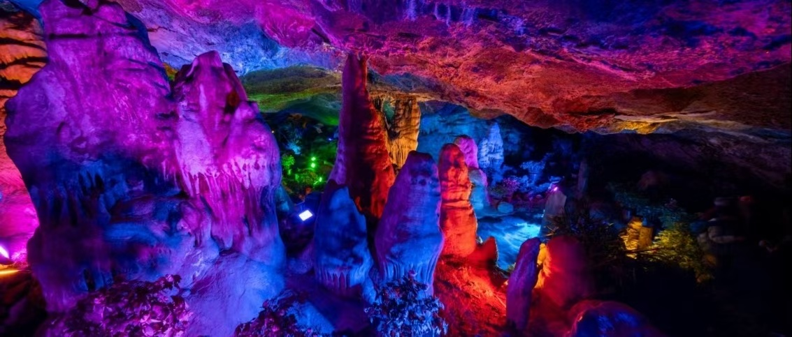

老君山与鸡冠洞坐落于河南省洛阳市栾川县，是豫西地区极具代表性的两大5A级景区。老君山为秦岭余脉伏牛山主峰，道教主流全真派圣地，山水秀美、云海壮阔，素有“北国张家界”美誉。
鸡冠洞是天然石灰岩溶洞，形成于亿万年地质变迁，洞内钟乳石造型奇特、景观瑰丽，被誉为“北国第一洞府”，山水溶洞相互映衬，组合游玩体验极佳。

📍 地址：河南省洛阳市栾川县老君山风景区、鸡冠洞风景区
🎫 门票：老君山成人门票+中灵索道组合优惠；鸡冠洞单独售票，学生凭证半价，老人儿童享优惠政策
⏰ 开放时间
全年开放 07:30-18:00
冬季雪景游览时段会适当调整闭园时间
🚗 交通指南
🍜 栾川特色美食
老君山路线：山门→中灵索道→中天门→十里画屏→金顶道观群→马鬃岭→下山返程
鸡冠洞路线：入口观光电梯→五大溶洞景观区→后山园林景观→出口，全程步行平缓轻松。
1. 老君山海拔较高，温差大，无论四季都需备好薄外套。
2. 冬季雪景绝美，路面易结冰，务必穿着防滑鞋。
3. 鸡冠洞洞内恒温湿润，常年凉爽，注意增减衣物。
4. 山区信号较弱，提前规划路线，结伴出行更安全。
5. 溶洞内路面湿滑，慢行观赏，禁止触摸钟乳石景观。
6. 节假日人流量大，提前线上预约门票。
春季山花烂漫、山林翠绿，适合徒步踏青；夏季凉爽宜人，是天然避暑胜地；秋季层林尽染，红叶漫山；冬季冰雪雾凇景观绝美，是老君山网红打卡最佳时节。